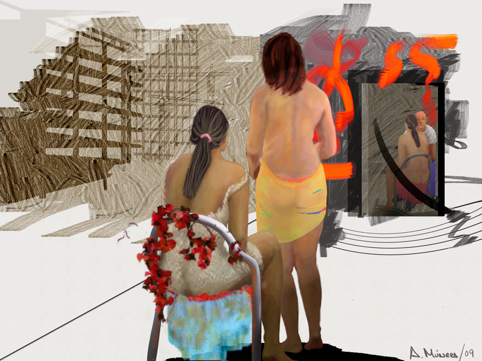
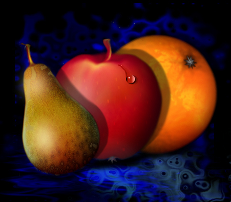
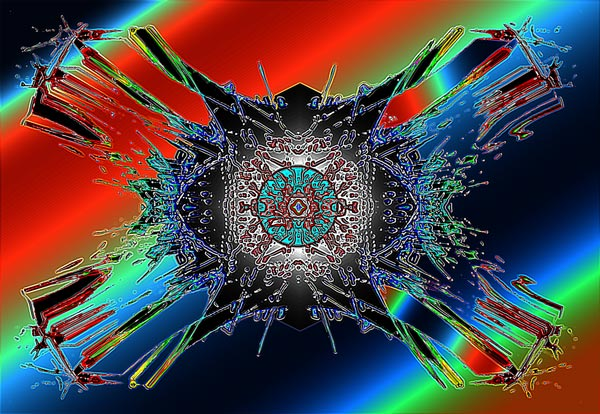
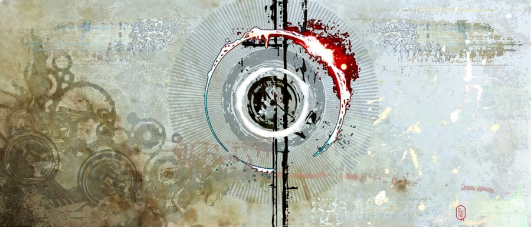

THIS PAGE HAS NOT YET BEEN FULLY POPULATED

Once-upon-a-time
by Armand Munera
06/01/2022
Click image to access artist's Autogallery 2010 exhibit
Ancestors Dimension
by Karoly Nemeth
06/02/2022
Click image to access artist's Autogallery 2010 exhibit

Just Fruit 
by Shawn Paula O'Brian
06/03/2022
Click image to access artist's Autogallery 2010 exhibit
Golden Dolphins
by J.R. O'Brien
06/04/2022
Click image to access artist's Autogallery 2010 exhibit

Concupiscence
by Debi Peralta
06/05/2022
Click image to access artist's Autogallery 2010 exhibit

Volcano 7 Enamel
by Mark Pettinelli
06/06/2022
Click image to access artist's Autogallery 2010 exhibit

Aged Strong Beautiful
by Rebecca L. Phillips
06/07/2022
Click image to access artist's Autogallery 2010 exhibit

Reflection 4
by Jerome Poitevin
06/08/2022
Click image to access artist's Autogallery 2010 exhibit

12.21.12 
by Don Quackenbush
06/09/2022
Click image to access artist's Autogallery 2010 exhibit
#26 
by Robert Reynolds
06/10/2022
Click image to access artist's Autogallery 2010 exhibit